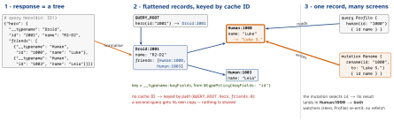

networking · folio
In one line: GraphQL is a typed query language over one endpoint: the server publishes a
schema, the client sends an operation naming exactly the fields it wants (+ typed
variables), and gets back JSON of the same shape as {data, errors}. Apollo iOS
generates Swift types from your .graphql files and keeps a normalised cache: every object
with a cache ID is stored once, so every query that contains it sees the same, updated value.
Download PDF Print view LaTeX source


GraphQL
- Schema (SDL): object types, scalars (
Int= 32-bit,Float,String,Boolean,ID),!= non-null, lists, enums, interfaces / unions,inputtypes. Introspection lets tools download it. - Operations over
POST /graphqlwith{query, operationName, variables}: query (read; sibling fields may resolve in parallel), mutation (write; top-level fields run in order), subscription (a stream of events, usually over WebSocket). - Fragments = named, reusable selection sets (
fragment X on Character); inline fragments... on Droidpick fields per concrete type of an interface / union — which is why the client asks for__typename. - Variables are typed (
$id: ID!) and sent separately — never string-build a query. - vs REST: no over-fetching (only the fields asked for), no under-fetching (nested data in one round trip, not N calls), a typed contract. Costs: one URL + POST → no free HTTP/CDN caching; query-cost limits; schema evolution by deprecating fields, not versioned URLs.
- Server N+1: one resolver per field →
friendsfor 50 heroes = 50 DB queries. Fix: DataLoader — batch the keys requested in one tick into one query, cache per request. - Errors:
{"data": {…}, "errors": [{message, locations, path, extensions}]}. A failing field becomesnull(bubbling up to the nearest nullable parent) and the rest is partial data. Typically HTTP 200 anyway — checkerrors, not the status.
Example — operation + Apollo iOS 2.x call
# Hero.graphql (codegen -> HeroQuery, HeroDetails)
fragment HeroDetails on Character { id name }
query Hero($id: ID!) {
hero(id: $id) { ...HeroDetails friends { ...HeroDetails } }
}
# schema extension (.graphqls): cache ID per type
extend type Human @typePolicy(keyFields: "id")let store = ApolloStore(cache: try SQLiteNormalizedCache(fileURL: url))
let client = ApolloClient(networkTransport: transport, store: store)
let res = try await client.fetch(query: HeroQuery(id: "2001"),
cachePolicy: .cacheFirst)
if let errors = res.errors { log(errors) } // GraphQL errors: not thrown
show(res.data?.hero?.name) // may be partial
// network / parsing failure -> thrown; catch itTraps
- “200 OK, so it worked” — read
errors[];datamay be partial or null. - Not selecting
id(or no@typePolicy) — path keys, duplicate copies, a mutation result that updates nothing on screen. - Blaming GraphQL for N+1 — it is the resolvers; DataLoader batches.
- “GraphQL is cached like REST” — POST to one URL; the client cache does the work (or persisted-query GETs).
- Forgetting to
cancel()a watcher; one giant query instead of per-view fragments. - Expecting Apollo iOS to roll back an optimistic write for you — it has no
optimisticResponse; you revert. - 2.x: GraphQL
Intinputs are generated as SwiftInt32(the spec’s 32 bits).
Remember
Ask for the shape, get the shape; flatten by __typename:id; 200 can still be an error.
Apollo iOS — the moving parts
- Codegen:
apollo-ios-cli(init,fetch-schema,generate) +apollo-codegen-config.json. Schema +.graphqloperations → a schema-types module + one Swift type per operation / fragment, with nestedDatamodels. Fields you didn’t select don’t exist in Swift. - 2.x = async/await rewrite, Swift 6 strict concurrency, most types
Sendable; iOS 15+; CocoaPods dropped.fetchreturns aGraphQLResponse(data+errors); multi-result policies return anAsyncThrowingStream. Interceptors split intoGraphQLInterceptor,HTTPInterceptor(e.g. auth header),CacheInterceptor,ResponseParsingInterceptor. A cache miss isnil, not a thrown error. - Cache policies (2.x):
.cacheFirst(default) ·.networkFirst(network, cache on failure) ·.networkOnly·.cacheOnly·.cacheAndNetwork(cached, then fresh: two emissions). 1.x names:returnCacheDataElseFetch,fetchIgnoringCacheData, … - Cache:
ApolloStoreoverInMemoryNormalizedCacheorSQLiteNormalizedCache(persists). Cache IDs via@typePolicy(keyFields:)(@fieldPolicymaps a field’s arguments to an ID) or programmatically inSchemaConfiguration. - Watchers:
client.watch(query:)→GraphQLQueryWatcher; re-delivers whenever any record it read changes.cancel()it when the owner goes — or it leaks. - Optimistic updates: Apollo iOS has no
optimisticResponse(Apollo Client web and Kotlin do). Write the expected value yourself instore.withinReadWriteTransaction(a@apollo_client_ios_localCacheMutationoperation gives mutable models), then send the mutation; on error write the old value back. - Pagination: Relay connections —
first/afterargs,edges { cursor node },pageInfo { hasNextPage endCursor }. Theapollo-ios-paginationpackage’sGraphQLQueryPager(fetch,loadNext,loadPrevious,refetch) watches and merges pages; cursor or offset. - Persisted queries: send a SHA-256 id instead of the document. APQ (
autoPersistQueries: true): unknown id → server error → client retries with the full text (useGETForPersistedQueryRetrymakes it a CDN-cacheable GET). Persisted query list (operationManifest): a safelist — the server runs only registered operations. - Subscriptions:
client.subscribe(subscription:)→ async sequence; over HTTP multipart, or WebSocket (ApolloWebSocket,graphql-transport-ws, 2.1+) withSplitNetworkTransportsending queries over HTTP and subscriptions over the socket.
REST or GraphQL? — say the trade-off
| situation | lean |
|---|---|
| many clients, each needing different slices | GraphQL: one schema, per-screen queries |
| public, cache-heavy reads (CDN) | REST (or GraphQL GET + persisted ids) |
| simple CRUD, one client | REST: less machinery |
| large file upload / download | REST or pre-signed URL; send the reference via GraphQL |
| live updates | subscriptions, or a plain WebSocket |